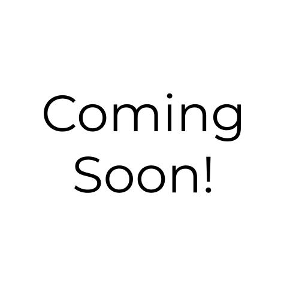

Hi there! I'm...
Jonathan Moon
A Passionate
I'm a thesis track CS Master's student at Cornell University. I tackle research problems at the intersection of computer vision, machine learning, robotics research. Currently, my research focuses on improving neural implicit representation learning towards practical applications for agricultural robots at the CAIR Lab with the goal of scaling sustainable agriculture. I am extremely excited to talk about anything NeRF related, SDF related, and 3D Gaussian Splat related.
ABOUT ME
Computer Vision Scientist

A Little About Me...
Born in South Korea raised in California
I received my BA from Cornell in CS and am currently pursuing my MS in CS as well.
Publications
My academic contributions

Title Omitted for Anonymity
Authors: Gemmechu Hassena, Jonathan Hyun Moon, Noah Snavely, Steve Marschner, Bharath Hariharan
Submitted to CVPR 2024
Omitted for Anonymity
A Preliminary Method for Tracking In-Season Grapevine Cluster Closure Using Image Segmentation and Image Thresholding
Authors: Manushi Trivedi, Yuwei Zhou, Jonathan Hyun Moon, James Meyers, Yu Jiang, Guoyu Lu, Justine Vanden Heuvel
Australian Journal of Grape and Wine Research 2023
My Skills
What I know
Libraries
PyTorch
Nerfstudio
ROS
OpenCV
TensorFlow/Keras
OpenGL
LANGUAGES
Python
Java
Matlab
Javascript/Typescript
OCaml
CRAFT
Blender
Premiere
Photoshop
LATEST WORKS
My projects and research
CS 6751 - Robot Manipulation Final Project

Professional Website

August 2020 - December 2020
In the fall of 2020, I took ENGRC 3025 Creating and Communicating Your Digital Professionalism taught by Dr. Allison Hutchison and Dr. Rick Evans. For the final project, I created a professional website using HTML, CSS, and the bootstrap framework. The website is built upon a template but was significantly altered to fit my rhetorical situation. The most notable changes from the template are the projects and travel sections. I wanted to keep the site to one page so for the projects section I created modals with more information for each project listed. More challenging and time consuming was the addition of a world vector map listing all the countries I have visited. I used the jQuery module JQVmap which provided all the core functionality but was difficult to fit and get at the correct scale. This website will always be a work in progress, so keep checking in to stay updated!Brain Cancer Neural Net

August 2020 - December 2020
In the fall of 2020, I took ECE 5970 Machine Learning with Biomedical Data taught by Mert Sabuncu. For our final project my team implemented a convolutional neural network for segmenting low-grade glioma in brain MRIs. I was the team leader, delegating work and overseeing the overall design of our implementation in PyTorch. We ended up using a standard UNet and focused on different preprocessing and data augmentation techniques to improve accuracy. I also experimented with skull stripping to try and improve our models performance which had mixed results. For this project we used Google Colab to train our model using their free GPUs.To view our Google Colab notebook check the link below on the left. A link to our final report for the project is also included.
Maculogix AdaptDX Pro

June 2020 - August 2020
In the summer of 2020, I worked as an intern at Maculogix, a biomedical startup. The company specializes in building equipment to detect age-related macular degeneration. The product I worked with was the AdaptDx Pro, a portable VR headset-looking device that could detect AMD within 15 minutes. When I arrived at the company there was a production bottleneck with the final calibration of the device, a process that took about 2 hours and 15 minutes. I was tasked with cutting down the time for a 40-minute section of this calibration process, a task that had to be repeated for each side of the device totaling 80 minutes. I was given instructions to implement a modified binary search that at best, would have cut down the time in half. However, after running a series of experiments, collecting data, and analyzing it, I realized that by using a modified interpolation search, that I could not only decrease the time by more than half but also increase the accuracy. In the end, I was able to cut the section down to 10 minutes for a total reduction of 80 minutes to only 20. After realizing how significant of a change had been made, my boss tasked me with cutting down the time for the entire calibration pipeline. Using computer vision algorithms and a FLIR camera, I was able to automate several steps in the calibration process that were originally performed manually, such as alignment of internal cameras and lights. In the end I was able to reduce the time for a complete calibration from 2 hour 15 minutes to only 35 minutes. This eliminated the production bottleneck and allowed the company to cut costs by not having to hire as many calibration techs as they had pla/beenned on.While the calibration software was my main contribution, there were a couple other things I worked on during my internship. I wrote a 40-page ISO 9000 compliant verification and validation document for my calibration software. I also discovered during my experiments with the device, that some of the sensors used for calibration were incapable of measuring light at the microlux level as accurately as my algorithms needed. After bringing this up with my boss, I was placed in charge of collecting data specifically for our sensors and sharing this with company we purchased them from.
Get in touch
Say hello!